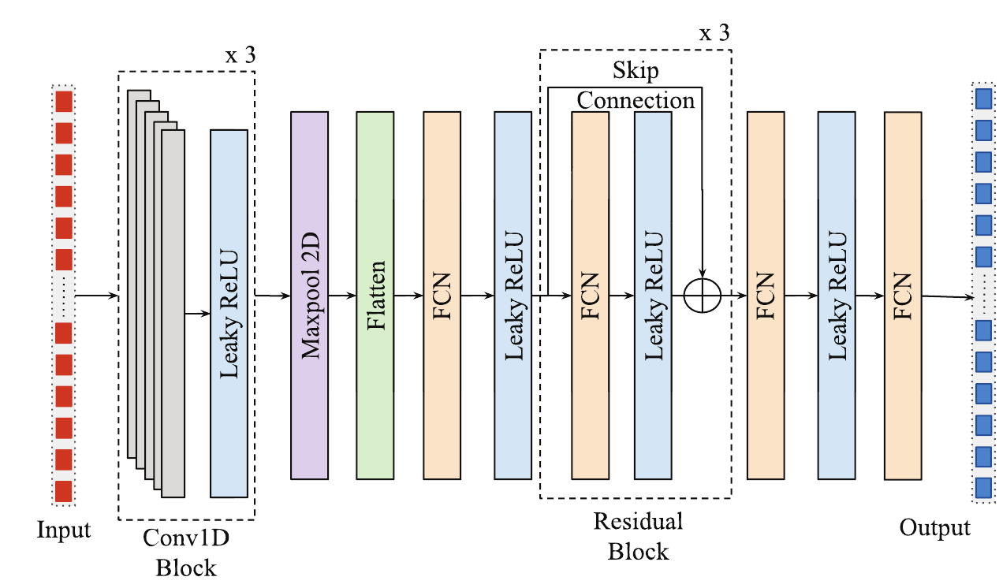
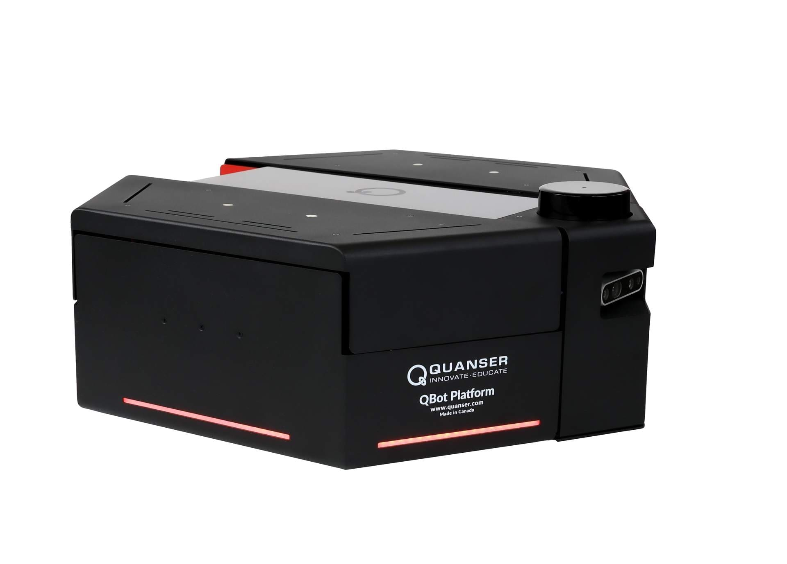
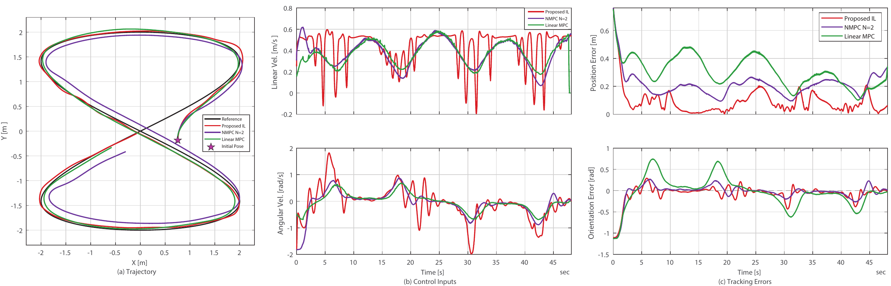

IEEE CASE 2026
A Real-Time Affordable Predictive Trajectory Tracking Controller for Differential Drive Robots via Imitation Learning
Concordia Institute for Information Systems Engineering, Concordia University
Predictive Cyber-Physical System Security Group (PreCySe)
Abstract
Nonlinear Model Predictive Control (NMPC) achieves high-accuracy trajectory tracking for mobile robots but is often too computationally demanding for resource-constrained platforms. We present a learning-based predictive tracking controller that imitates an expert NMPC policy to achieve real-time performance on differential-drive robots. Our approach combines (a) state-perturbation augmentation with relative-error states to enrich the expert dataset and (b) a lightweight neural architecture based on 1-D convolutions with residual blocks and a physics-aware loss informed by robot kinematics. Expert state-action pairs are collected in a high-fidelity, physics-enabled simulator. Finally, we evaluate the resulting policy in a real-time experiment using a Quanser QBOT differential-drive platform, demonstrating tracking accuracy comparable to NMPC while significantly reducing computation time.
Video
Method


A high-horizon NMPC expert generates state-action demonstrations offline in a physics-enabled digital twin. Pose perturbations broaden the rollout distribution, while a relative-error horizon represents the robot's deviation from the future reference trajectory. At deployment, the trained policy predicts a sequence of controls and applies the first action in receding-horizon fashion.
Real-Time Results

| Method | MSE [m²] | ISE [m²] | IAE [m] |
|---|---|---|---|
| LMPC N=7 | 0.1058 | 8.4829 | 24.6028 |
| NMPC N=2 | 0.0506 | 2.4376 | 10.0803 |
| IL N=20 | 0.0169 | 0.8133 | 4.3281 |
| Method | Average [s] | Maximum [s] |
|---|---|---|
| LMPC N=7 | 0.0159 | 0.1050 |
| NMPC N=2 | 0.0163 | 0.0356 |
| IL N=20 CPU | 0.0013953 | 0.001955 |
| IL N=20 GPU | 0.0009955 | 0.001394 |
Funding
This work was supported in part by the Natural Sciences and Engineering Research Council of Canada (NSERC), by Fonds de recherche du Québec (FRQNT), and by the National Cybersecurity Consortium (NCC).
BibTeX
@inproceedings{rajkumar2026ilnmpc,
title = {A Real-Time Affordable Predictive Trajectory Tracking Controller for Differential Drive Robots via Imitation Learning},
author = {Rajkumar, Suryaprakash and Lucia, Walter},
booktitle = {Proceedings of the IEEE International Conference on Automation Science and Engineering (CASE)},
year = {2026}
}